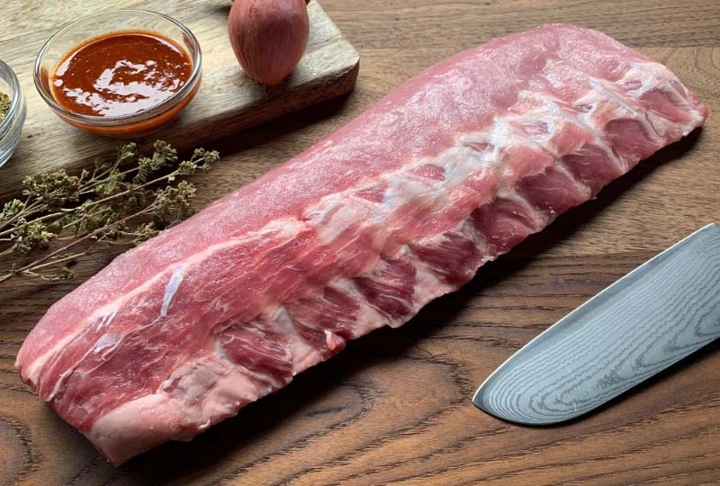

De lekkerste Barbecue Recepten
De lekkerste spareribs van de BBQ voor 4 personen
Ingrediënten kruidenmix
3 eetlepels grof zeezout
3 eetlepels versgemalen zwarte peper
2 eetlepels bruine basterdsuiker
1 eetlepel gerookte paprikapoeder
2 theelepels uienpoeder
1/2 theelepel gemalen komijn
1 theelepel gemalen koriander
2 theelepels gemalen mosterdzaad
1 theelepel gemalen venkelzaad
Ingrediënten laksaus
200 ml appelsap
100 ml ketchup
100 ml tomatenpassata
140 gram donkere basterdsuiker
50 ml appelciderazijn
2 eetlepels worcestershiresaus
4 eetlepels balsamicoazijn
2 eetlepels honing
2 eetlepels sojasaus
1 eetlepel mosterd
1 eetlepel sambal
1 theelepel versgemalen zwarte peper

Voorbereiding
Haal de spareribs twee dagen voor bereiding uit de vriezer en laat langzaam ontdooien in de koeling. Meng alle ingrediënten voor de kruidenmix. De hoeveelheid is voldoende voor twee spareribs. Haal de spareribs een dag voor bereiding uit de koeling, verwijder de verpakking en dep droog. Verwijder het vlies aan de achterzijde en wrijf de spareribs in met de kruidenmix. Pak ze in met vershoudfolie en leg terug in de koeling tot de volgende dag.
Bereiding laksaus
Voeg alle ingrediënten in een pan, breng langzaam aan de kook en roer tot de suiker is opgelost. Laat de saus rustig inkoken tot de gewenste dikte (10–15 minuten). Gebruik direct of laat afkoelen.
Bereiding spareribs op de BBQ
Bereid de BBQ met houtskool en rookhout. Plaats de plate setters en leg de spareribs op het rooster bij ca. 120°C. Sluit de deksel voor 3 uur en houd de temperatuur constant. Pak de spareribs daarna in met aluminiumfolie en een beetje appelsap voor 1,5–2 uur stomen. Wrijf ze vervolgens in met de laksaus elke 15 minuten tot de gewenste gaarheid.